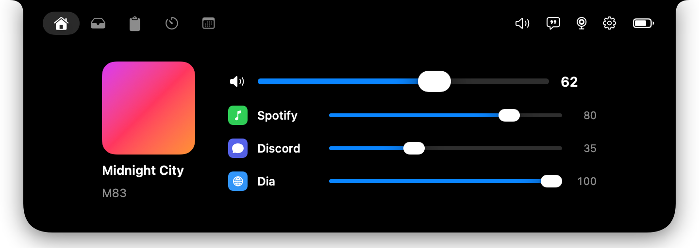
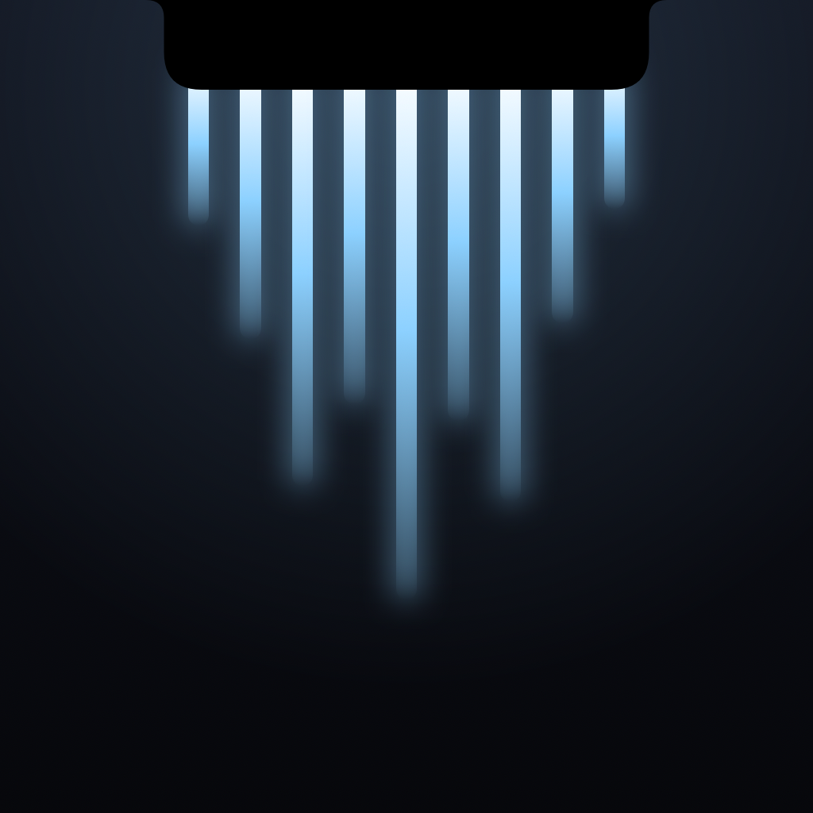
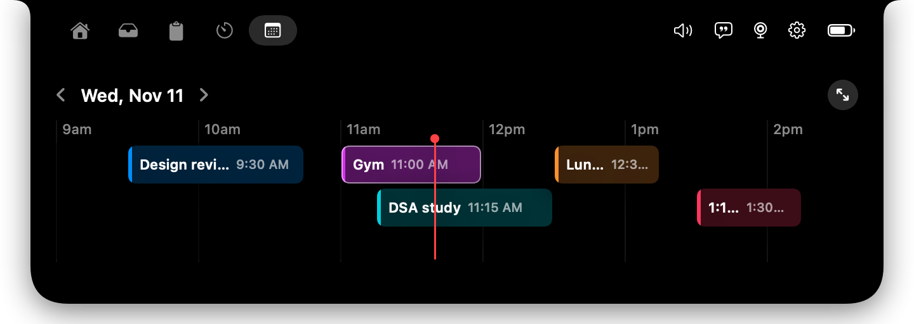
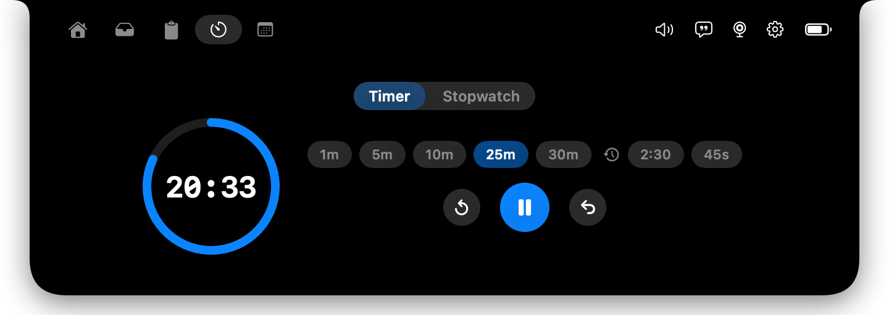
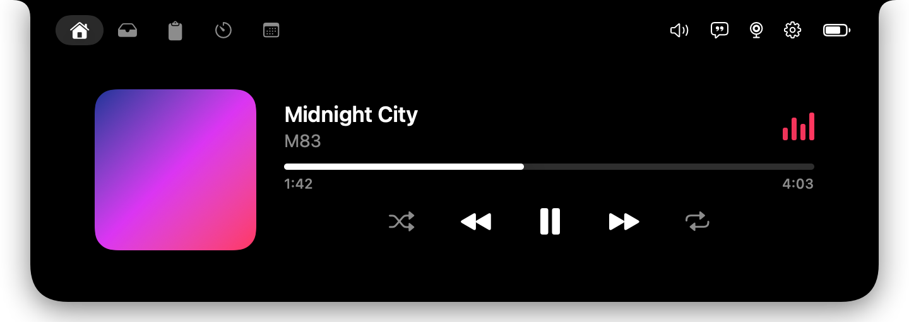
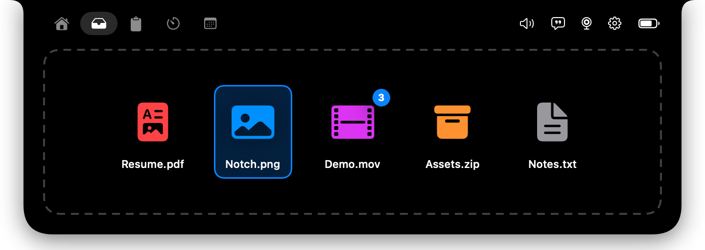
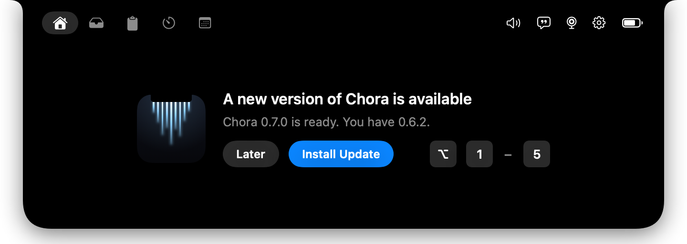

Volume mixer
A master slider plus a slider for each app. Turn one app down without touching the rest.

ChoraSound. Time. Space.
Sound, time and space, right in your notch. A volume mixer, calendar, timer and music player that live at the top of your Mac.
Download for MacFree · macOS 14 or later · Apple silicon

A master slider plus a slider for each app. Turn one app down without touching the rest.

Your day as one wide timeline. Drag events to move or resize them, click for details, and see Google Tasks.

Lengths down to the second, recent timers, a smooth ring, and undo when you reset by mistake.

Album art, a live visualizer and synced lyrics. Music and a running timer share the notch.

Drop files on the notch to keep them close, and get back anything you copied.

Signed updates install from inside the app. Switch tabs with ⌥1 to ⌥5.
xattr -dr com.apple.quarantine /Applications/boringNotch.appUpdates after that install themselves.
Hi, I'm Ronald. I design and build Chora, and I use it every day. I started from the open-source boring.notch and added the things I wanted from my notch: a per-app volume mixer, a calendar I can edit, a better timer, and updates that ship on their own.